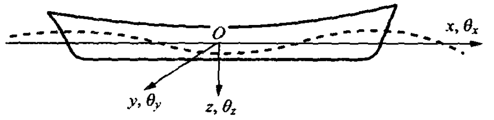
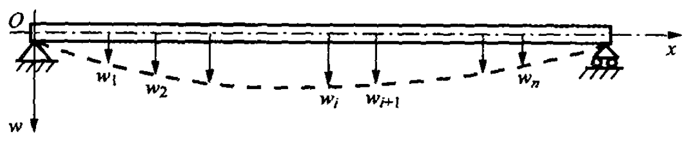

2.1. 引言#
在任何瞬时，系统的位置都必须用两个或者更多的广义坐标才能确定的系统称为多自由度系统，例如，船舶在波浪上的运动可视为刚体的空间运动，因而有6个自由度，即需要6个广义坐标（如\(x\)、\(y\)、\(z\)、\(\theta_x\)、\(\theta_y \)和 \(\theta_z\)）才能完全确定任意瞬间它在空间的位置(见Fig. 2.1)。然而当研究船舶在波浪中的总纵强度时，仅限于讨论船舶的升沉和纵摇运动，故可将船舶视为两个自由度的系统，只要两个广义坐标 \(z\) 和 \(θ\)，就可以确定任何瞬时它在空间的位置，此时，为两自由度系统。
{kind=link}

Fig. 2.1 船舶刚体运动的自由度#
工程上各种机械和结构物，均是由杆、梁、板、壳等元件组成的弹性体。由于它们的质量和刚度都具有分布的性质，包含有无限个质点，故其在空间的位置在任何瞬间都需要无限多个广义坐标才能确定，因而在理论上它们都是无限自由度系统。
然而，在很多情况下，可将弹性体的振动从无限自由度简化为有限多个自由度系统进行分析，得到其主要的（即频率较低的）若干振动特性与规律，并满足所需的精度。例如，研究一根简单的梁的横向弯曲振动问题时，可将梁的质量凝聚在 \(n\) 个有限的离散的质点上，用 \(n\) 个质点处的垂向位移\(w_1\), \(w_2\), \(\cdots\), \(w_n\)作广义坐标代替连续的动挠度曲线来近似描述该梁的振动(见Fig. 2.2)。除了上述的直观方法外，还可以采用其他一些近似的方法（如瑞利-里兹法）将无限多自由度的弹性体转化为多自由度系统。近几十年来，随着电子计算机的广泛应用，发展了另一种 有效的离散化方法——有限元法，从而使任何复杂的弹性结构的振动，都可以离散为近似的多自由度系统的振动问题。
{kind=link}

Fig. 2.2 梁的离散化模型#
由此可见，讨论多自由度系统的振动对研究工程结构和机械的振动具有极其重要的现实意义。
和单自由度（SDOF）系统一样，多自由度（MDOF）系统的振动，可以分为自由振动和强迫振动两类。
与SDOF系统类似，通过分析多自由度系统的自由振动及其求解，本章着重引入了多自由度系统的振动模态（主要指固有频率和固有振型）的概念。固有振型（或称模态振型、主振型）是由于振动系统自由度的增加而引出的描述MDOF振动系统固有性状的一种新的参数。固有频率和固有振型的个数与系统的自由度数相同。本章还进一步引入了MDOF系统固有振动的模态参数（模态质量、模态刚度、模态阻尼等）的概念，对于振动系统的模态特性（主模态、模 态正交性、正则化模态、模态展开定理和模态叠加等）进行了详细讨论，这是MDOF系统和SDOF系统相区别的一个重要点，也是构成所有弹性系统振动理论的十分重要的基础。
基于振型叠加的理论和方法，可以方便地获得MDOF系统自由振动的一般解以及强迫振动响应的求解。在系统强迫振动响应分析中，引入了阻尼，通过系统对于简谐激励力响应的分析，向读者引入了近代试验模态分析中广泛应用的频率响应函数和传递函数的初步概念。
在本章的最后，通过两自由度系统自由振动分析，讨论了主从系统的耦合作用，提供了分析和判断船舶总体振动与局部结构振动两者之间相互影响的理论基础；而两自由度系统强迫振动分析，则成为消振器减小和消除振动的理论依据。
需要指出的是，由于本章的MDOF系统是一种离散系统，在描述系统的振动特性时，广泛地使用了矩阵表达、矩阵分析和矩阵运算，这使MDOF系统的振动变得十分简洁和方便，因而，读者在阅读本章时必须具备矩阵运算的有关知识。